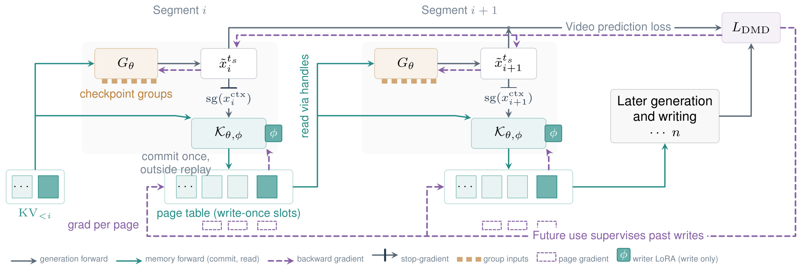
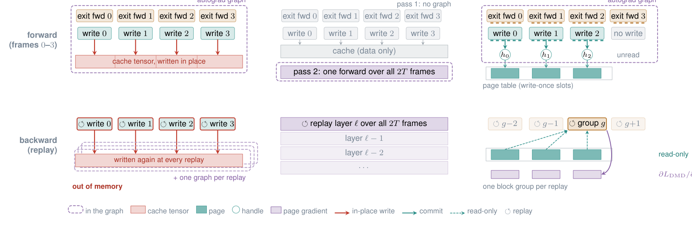
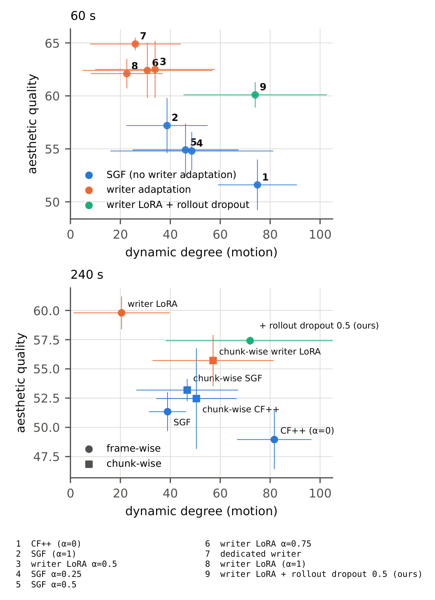

Persistent differentiable pages
Each write commits an immutable page outside any replay region. Readers receive the captured prefix through data-free handles, so the graph holds handles while the page data stays outside it.
DIFFERENTIABLE KV CACHE · LONG-HORIZON VIDEO GENERATION
Separating Generation and Memory Representations
through a Differentiable KV Cache
Georgia Institute of Technology
Training the cache's memory writes takes no second pass. It takes a cache built for gradients: persistent pages, local rematerialization, and a writer that learns what to remember from its future reads.
Trained on 5 s clips, dKV Forcing generates 60 s and 240 s videos, 12 and 46 times the training clip. Four generations of dKV Forcing, each from a single rollout.
01 — OVERVIEW
A causal video generator produces two key–value states for every segment: the KV it uses while denoising that segment, and the KV it writes into the cache for later segments to read. In a pretrained generator the two already differ, later segments attend to them differently, and replacing the written KV with the generation KV degrades the continuation.
dKV Forcing (differentiable KV) learns a dedicated memory representation from its future use. A writer-specific low-rank residual on the shared backbone separates memory writing from generation and is trained through the future reads of what it writes. Persistent differentiable pages with local rematerialization compute, in one temporal traversal, exactly the gradient that a two-pass reconstruction of the same objective computes.
02 — COMPARISONS
CF++ detaches the writes. SGF trains them with the memory gradient.
dKV Forcing adds the writer residual with rollout dropout.
All models share the Causal Forcing++ initialization, data, schedule and training seed. Videos are the generations evaluated in the paper, played at 16 frames per second.
03 — METHOD
Pages hold the history outside the graph.
Handles keep the gradient connections.
Each write commits an immutable page outside any replay region. Readers receive the captured prefix through data-free handles, so the graph holds handles while the page data stays outside it.
Every graph-carrying forward is rematerialized locally in groups of blocks. The retained activation footprint is bounded independently of the persistent state, and no second pass over the clip is needed.
A low-rank residual on the K and V projections is active only when a segment writes its memory. It learns what to remember from the gradients of future reads while the generation backbone stays shared.


04 — RESULTS
1.3B Causal Forcing++ generator, 5 s training clips.
VBench-Long at 60 s and 240 s.

05 — CITATION
@article{li2026dkvforcing,
title = {dKV Forcing: Separating Generation and Memory Representations through a Differentiable KV Cache},
author = {Li, Zhiqi and Zhu, Bo},
journal = {arXiv preprint},
year = {2026}
}